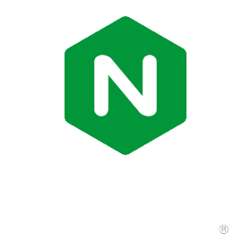

My NGiNX Practical Demonstration
Thank you for visiting this site. This is my project for roadmap.sh devops roadmap. Today, I am exploring how to use NGiNX and how to configure it in the server. My setup is using my windows laptop and using kali linux from a virtual machine.